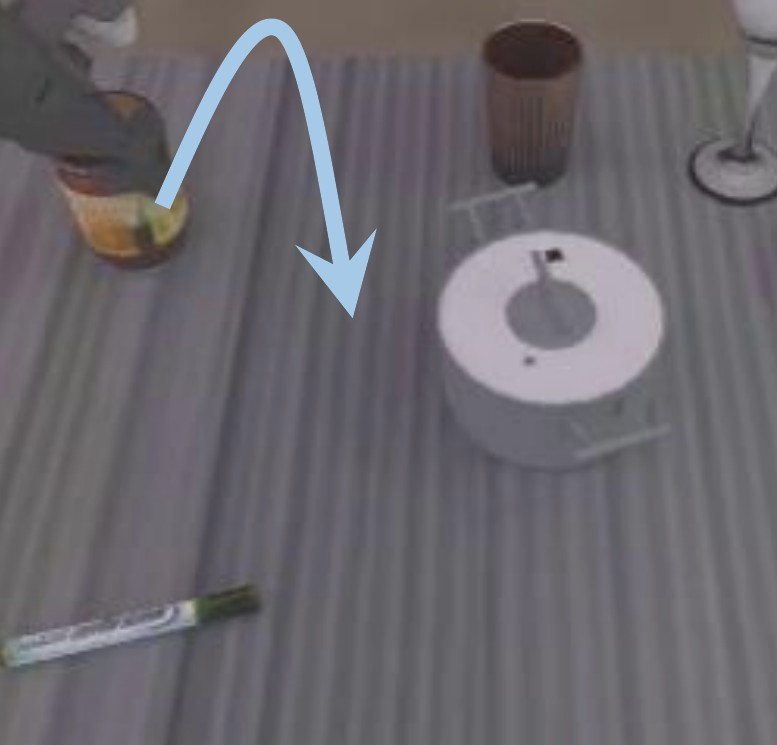
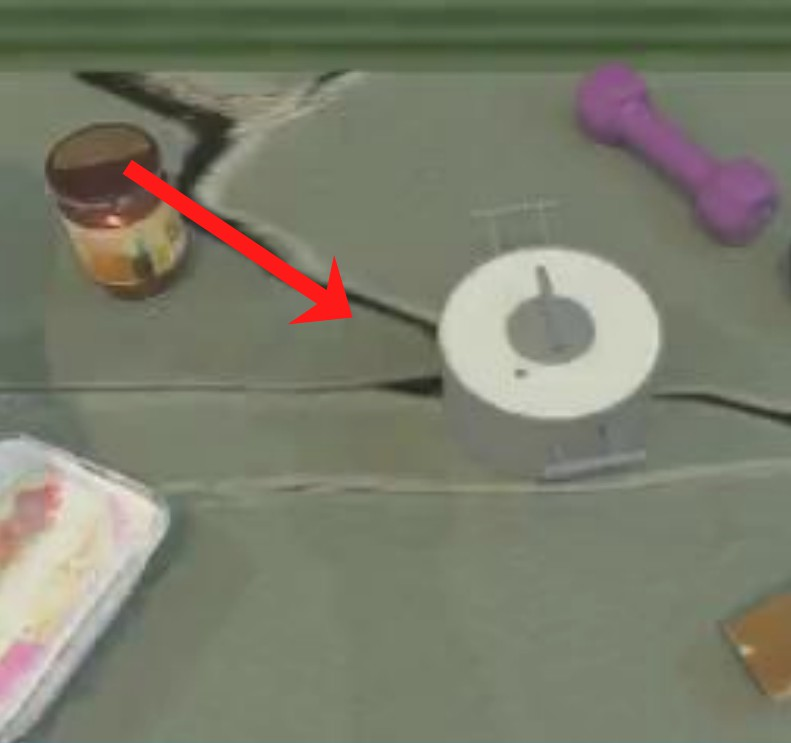
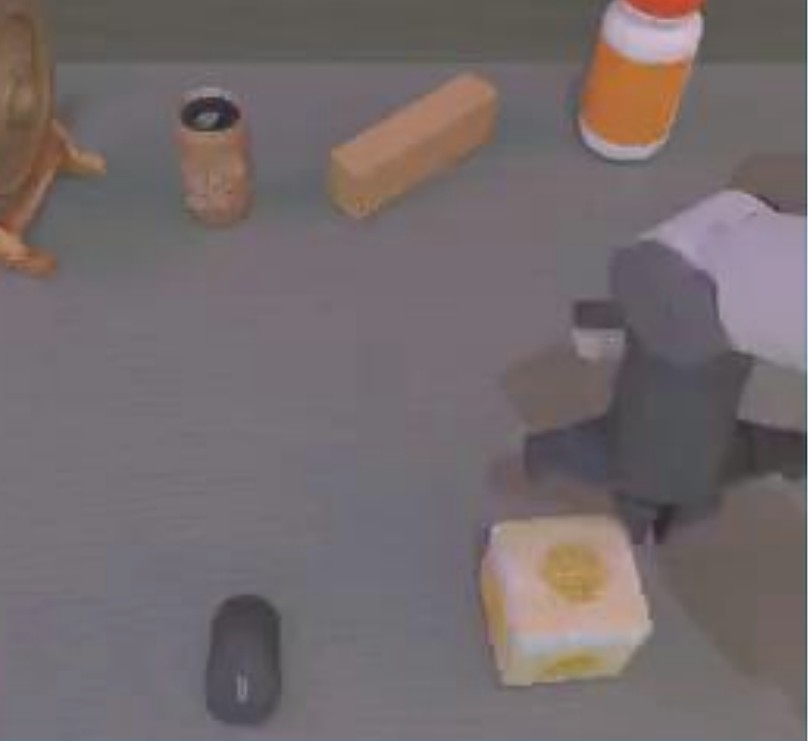
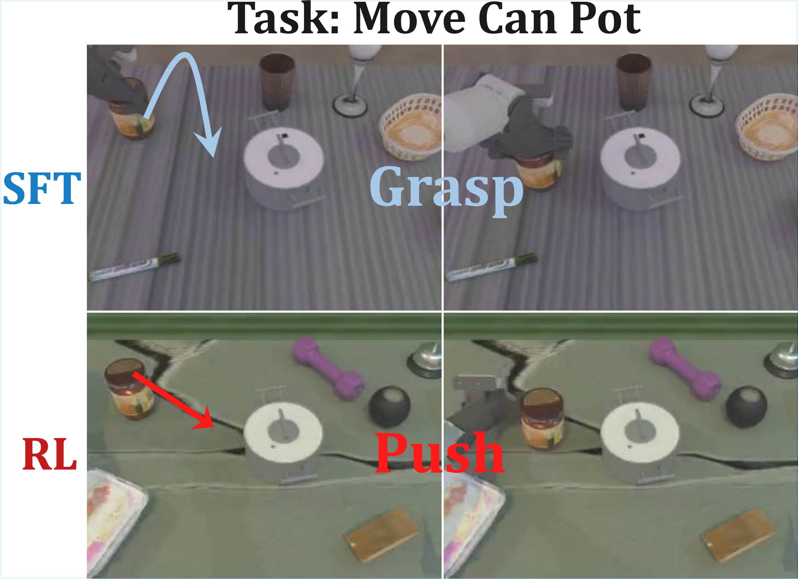
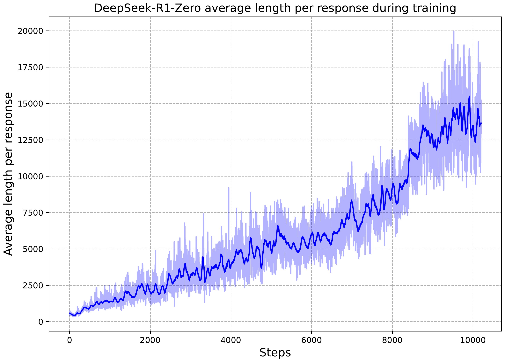
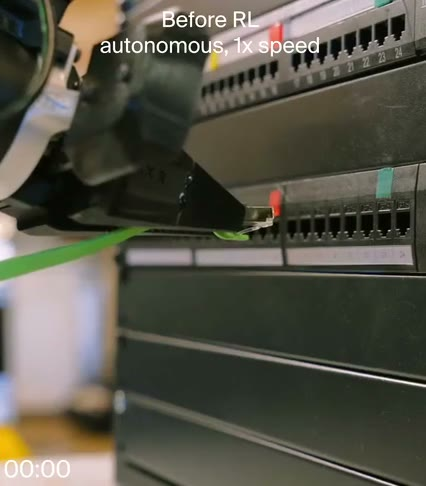
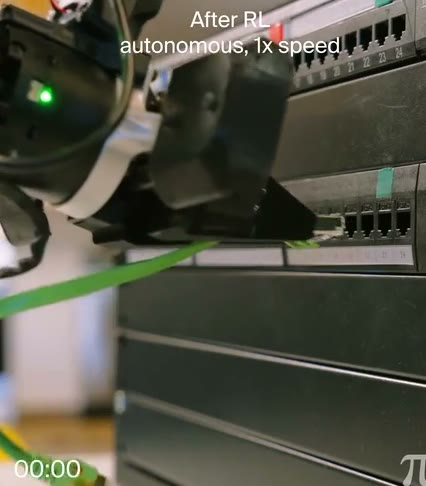
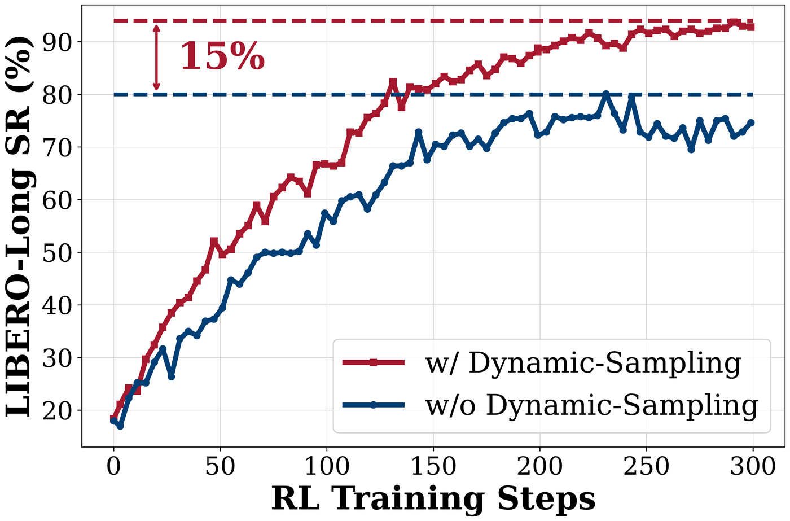
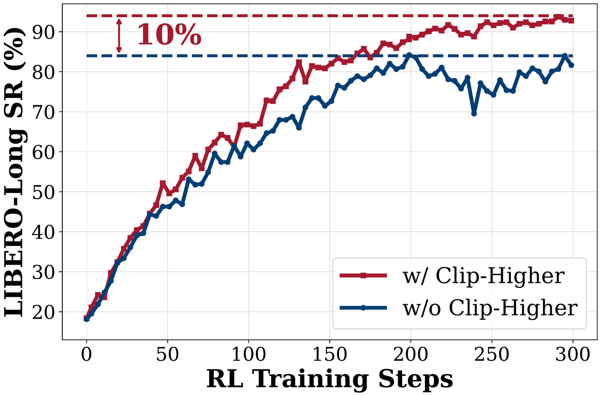
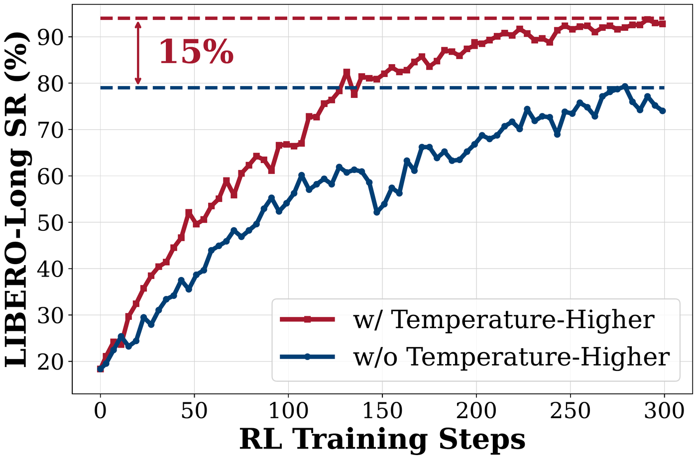
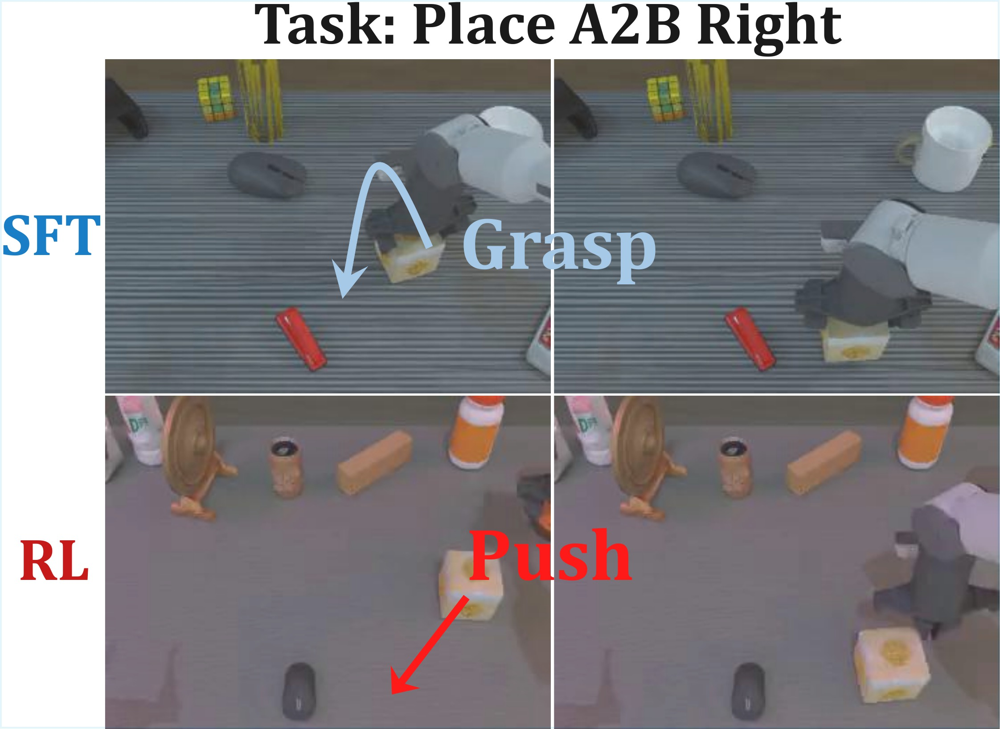
| 工作 | arXiv | 改了哪一块 | 怎么改 | 一个数 · 去向 |
|---|---|---|---|---|
| GRAPE | 2024-11 | 12345 | 不算优势：成功、失败的轨迹成对比，做偏好对齐（DPO 一类）；大模型拆阶段给约束 | 不是在线 RL |
| iRe-VLA | 2025-01 | 12345 | RL 时冻住大模型、只训动作头（PPO），再拿成功的轨迹全参 SFT，两步交替 | ICRA 2025 |
| RIPT-VLA | 2025-05论文先挂出 | 12345 | 同样只给 0/1、不要价值网络、丢掉全成全败的组；优势用留一法：跟另外 7 局的平均比 | 1 条示范 4% → 97% |
| VLA-RL | 2025-05 | 12345 | 训一个过程奖励模型给中间分；PPO，要价值网络 | LIBERO +4.5 |
| RL4VLA | 2025-05 | 12345 | PPO，价值头接在 VLA 上；专门对比 PPO、GRPO、DPO | → 下一页 |
| TGRPO | 2025-06 | 12345 | 大模型写多阶段的稠密奖励；轨迹级和步级两种优势合起来 | LIBERO 80.7 |
| SimpleVLA-RL | 2025-09 | 12345 | 范式本身：0/1 + GRPO + 全参，加三个让它多试的技巧 | LIBERO 99.1 |
| RLinf-VLA | 2025-10 | 12345 | 框架：渲染、推理、训练怎么分 GPU；同一平台上公平比 PPO 和 GRPO | LIBERO 130 个任务 98.1 |
| πRL | 2025-10 | 12345 | 起点换成 π0 / π0.5 的 flow 头：改造去噪过程，让它能算概率 | → 范式二 |
| DSRL | 2025-06 | 12345 | VLA 一个参数都不改，只学喂给它的起点噪声 | → 范式三 |
| 基准 · 模型 | SFT 起点 | + Flow-Noise | + Flow-SDE | 全量示范 SFT |
|---|---|---|---|---|
| LIBERO · 4 组 40 个任务 · 成功率 % | ||||
| π0 | 57.6 | 97.6 | 96.1 | 94.2 |
| π0.5 | 77.1 | 98.3 | 97.9 | 96.9 |
| π0.5其中 Long 组 | 43.9 | 94.0 | 93.0 | 92.4 |
| ManiSkill · 4352 种抓放 · 成功率 % | ||||
| π0 | 38.4 | 77.8 | 78.8 | — |
| π0.5 | 40.1 | 89.7 | 90.9 | — |
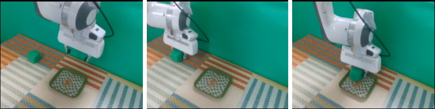
平时：噪声 w 从标准高斯里随便抽
去噪出动作 a，右边两个例子都失败
DSRL：小策略 πW 看状态出 w
绿框：原策略 + 环境，合起来当新环境
RL 只改这个小策略
改完，同样两个任务都成功
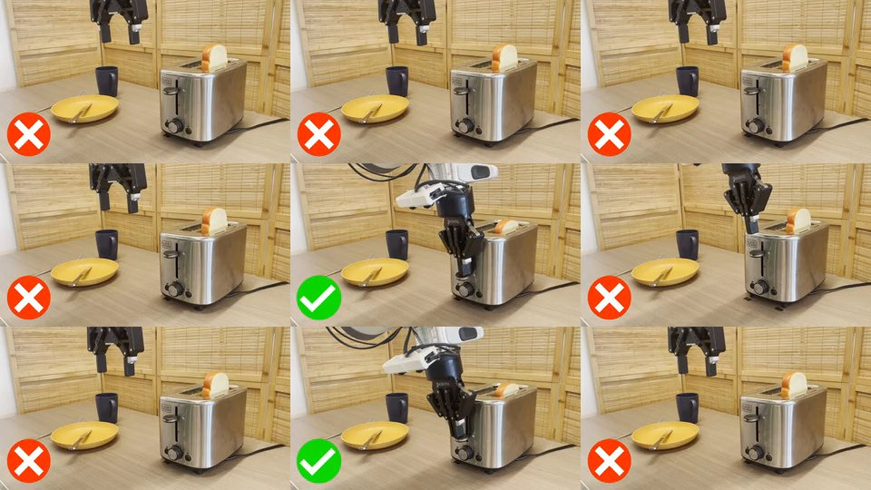
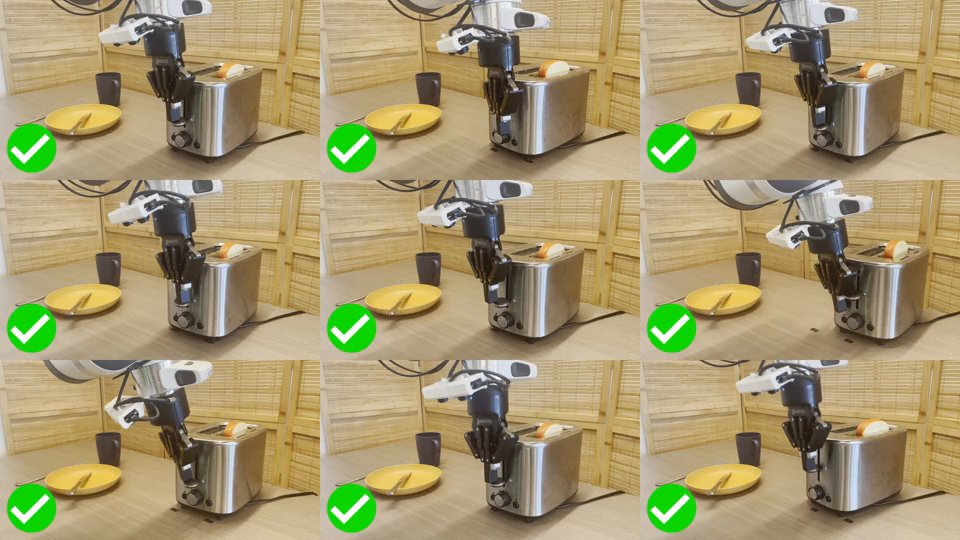
| πRL改 VLA 的权重 | DSRLVLA 一个参数不改 | |
|---|---|---|
| 改什么 | 动作专家（约 3 亿参数）整个练RL 阶段 VLM 冻住 | 只训一个小网络VLA 当黑盒，只调用 |
| 概率 · 怎么试 | 去噪每一步加噪声：概率能算，也能试 | 换起点噪声来试概率在小策略上，VLA 去噪照旧 |
| 算法 | PPO + 价值网络：这批数据练完就扔 | SAC：存进经验池反复用 |
| 在哪练 · 多少数据 | 仿真：64–320 个环境并行，8 张 H100真机靠 sim-to-real | 仿真 + 真机：真机 65–80 局小策略在一张 8 GB 显卡上训 |
| 局限 | 要海量试错，只能在仿真里练 | 只能在原策略会出的动作里挑RL Token 论文：成功率高，提速有限 |
| 接下来 | 仿真搭不像真的 → 第三期：世界模型里练 | 字节 GR-RL 的在线阶段用了这个思路 → 第四期 |
| 练法 | 改什么 | 算法 | 在哪练 | 要多少试错 | 代表结果 |
|---|---|---|---|---|---|
| 直接练 · token 头SimpleVLA-RL · RL4VLA | 整个 VLA | GRPO RL4VLA 用 PPO | 仿真 | 海量 每个起点跑一组 | 1 条示范 48.9 → 96.9 |
| 直接练 · flow 头πRL | VLA 的动作专家 VLM 冻住 | PPO 去噪里加噪声 | 仿真 | 海量 几百个环境并行 | π0.5 LIBERO-Long 43.9 → 94.0 |
| 不改大模型DSRL | 只训一个 挑噪声的小策略 | SAC 经验反复用 | 仿真 + 真机 | 少 真机 80 局 ≈ 1.1 万步 | π0 真机开烤面包机 5/20 → 18/20 |